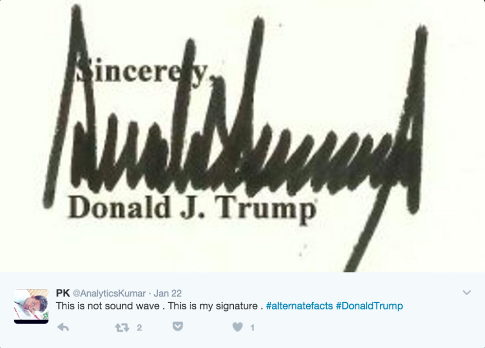
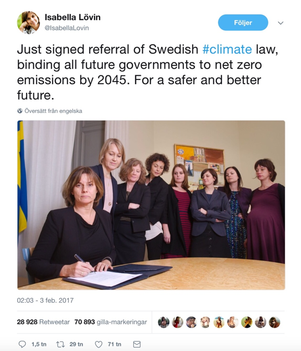
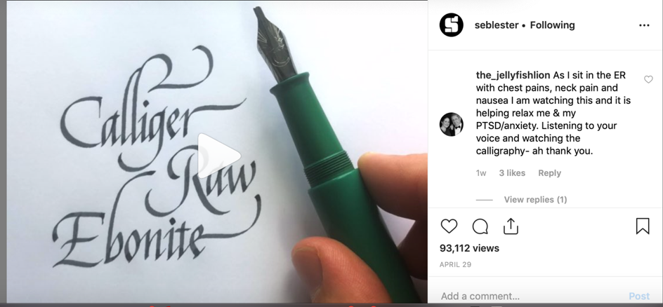

New Materialism and the Intimacy of Post-digital Handwriting
Adam Wickberg
Max Planck Institute for History of Science in Berlin
(Published March 11, 2020)
Introduction
New Materialism and the Intimacy of Post-digital Handwriting
After Donald Trump won the U.S. presidential elections in 2016, images of his signature quickly started circulating on social media. They were often accompanied by comments about the new president’s curious handwriting and what it might reflect. Suggestions of what Trump’s handwriting looked like included the sound wave of a screaming demon and the gates of Mordor. Perhaps social media users were just trying to make sense of the new political era in U.S. politics he inaugurated, but the fascination with handwritten text in digital milieus captures a phenomenon known as the post-digital condition.
This essay analyzes three cases of the changing ontology and epistemic conditions of the practice of handwriting after digitization. It does so by developing a theory of post-digital handwriting, that is, writing on paper by hand which is then digitized as image and disseminated online. The theory draws on scholarship in media theory on the post-digital as well as insights from new materialism. The cases discussed are penmanship porn, bullet journaling, and the political signature, all phenomena which highlight the intimacy and singularity of handwriting as a physical and sensory practice reminiscent of the modern understanding of love letters. The peculiar phenomenon of “penmanship porn” can be found in online posting communities like Reddit, where users contribute and comment on examples of particularly beautiful handwriting. The notoriously slippery concept of “intimacy” is employed in this essay to describe the quality of emotional and physical nearness in the practice of handwriting, borrowing the definition from sociologist Anthony Giddens of intimacy as “a matter of emotional communication, with others and the self, in a context of interpersonal equality” (130). The relation of intimacy discussed here, however, is never direct but always an effect of the media practice and its trace as handwritten paper, whether it be one’s own writing or that of another. Furthermore, for the purpose of interrogating its coming into being, rather than presupposing two entities engaging in intimacy, I understand it to be the causal result of the intra-action of several entities. The concept of bullet journaling was created by digital product designer Ryder Caroll and is currently marketed to a younger generation as a combination of mindfulness and productivity system which uses handwriting as its method to navigate a post-digital life. This analysis shows how renewed interest in handwriting is produced through investment in physical affects like intimacy and closeness, which make them appear as singular when posted online. The same seem to apply for the interest in Donald Trump’s signature, which has been intensively circulated on Twitter and Instagram since he took office. Together, these examples reveal how, contrary to popular opinion in recent years, handwriting is not disappearing but rather transforming into a different practice, less tied to verbal communication and more employed as a visual phenomenon to invigorate the post-digital with the qualities of intimacy and singularity which it is sometimes said to be lacking. A number of books in the last decade has made the case of the imminent disappearance and death of handwriting (Trubek, Hensher, Burns Florey). A more nuanced account of the history of handwriting in relation to these changing conditions today is found in Sonja Neef’s work. In her view, handwriting has been challenged by technologies of imprint since the Gutenbergian revolution, yet it has always somehow survived. One might argue that the reach of digitization far exceeds those of previous shifts in writing technologies, but that would be overlooking the fact that technologies of writing and literacy have always been closely aligned. In Neef’s account, the question if handwriting will survive digitization is philosophically and historically incorrect (28). She notes that philosophically the question is erroneous because it assumes a teleological relationship between media and their practices. Written thirteen years ago, this position can today be validated by Apple’s launch and successful implementation of the “Apple pencil” for iPad. Understanding handwriting historically, she points out that “in spite of the emergence of generations of ‘writing machines’, manual script has never disappeared; on the contrary, as it evolved, handwriting adjusted its practical functions, social meanings and cultural aesthetics” (8). Zooming in on these changes of social meanings and cultural aesthetics, and specifically what I refer to as the changing ontology and epistemic conditions, this essay offers a mapping and analysis of what I call post-digital handwriting.
Post-digital media theory and New Materialism
Florian Cramer, who is often cited as a pioneer of the concept, describes the post-digital as a phenomenon that takes place when digitization is so abundant and evident that it no longer seems to provoke wonder and optimism but is just as likely to cause resistance and distancing within the digital itself. He lists disenchantment of the digital and revival of old media as central features of the post-digital (13). Digital Humanities scholar David Berry argues along the same lines in insisting, “the historical distinction between the digital and the non-digital becomes increasingly blurred, to the extent that to talk about the digital presupposes an experiential disjuncture that makes less and less sense.” (22) With the anthology Post-digital Aesthetics, Berry has further explored the phenomenon of post-digital within the fields of arts and design. Other media scholars like John Durham Peters have also insisted on the inseparability between the digital and the physical in the contemporary technological infrastructure.
These ideas are well supported by theoretical developments in New Materialism and Environmental Humanities. Geologist Peter Haff’s coining of the concept technosphere accounts for an “emerging global paradigm”— composed by a new spherical layer on the planet made up of “the interlinked set of communication, transportation, bureaucratic and other systems that act to metabolize fossil fuels and other energy resources” (301). Unlike the biosphere, atmosphere, and lithosphere, the technosphere has an autonomy in which an all-encompassing global society has become so dependent upon technology that people must service its parts continually in order to survive themselves. Simultaneously, important theoretical work has been done in New Materialism and Object Oriented Ontology to clear the ground for more nuanced understandings of digital culture. Karen Barad’s concept ethico-onto-epistemology highlights how the world is intra-actively co-constituted by humans and non-humans (90). The critical work in dissolving the binaries of nature and culture and that of body and mind can productively be extended to the realm of the post-digital. Stacy Alaimo’s transcorporeality is another concept that is helpful in understanding the agency of material forces in and through human bodies (11). Iris Van de Tuin has discussed the shared critical genealogy of OOO and New Materialism but also notes crucial differences (233). Van der Tuin points out the tendency in some OOO work of replacing object with subject without actually changing more than semantics. Simultaneously, and on a related critical note, Timothy Morton has extended an Object Oriented Ontology that explores causality and strives to overcome binaries of natural and cultural. In Realist Magic, Morton argues “causality is wholly an aesthetic phenomenon. Aesthetic events are not limited to interactions between humans or between humans and painted canvases or between humans and sentences in dramas. They happen when a saw bites into a fresh piece of plywood… The aesthetic dimension is the causal dimension” (19). Morton’s argument has a lot of bearing on the onto-epistemology of post-digital handwriting, in that it highlights singularity and contingency. The contemporary art scene has seen a proliferation of post-digital and post-internet artistic practices. This tendency, sometimes also referred to as the New Aesthetic, has developed in response to the same situation that scholars of the post-digital describe, namely that there no longer seems to exist a position outside of the digital and that hence a meaningful distinction of digital and not digital is increasingly difficult to uphold. I have explored the case of post-digital handwriting in the context of contemporary art elsewhere (Wickberg). Against this background, the term post-digital in this essay refers to the contemporary experience of a historical situation where what has been called the digital is now so abundant and far reaching that it affects aspects of being well beyond a keyboard and a screen. Post-digital handwriting then, is employed to describe the historical situation in which the epistemic conditions of writing by hand has changed from dialogical verbal communication to a visual object to be appreciated aesthetically and contribute singularity and intimacy to online communities.
The case of post-digital handwriting can also be productively addressed drawing on insights from Karen Barad’s critical thought on materiality. In a radical rendering of Foucault, she repurposes the concept of apparatus in order to achieve a more nuanced understanding of the entanglement of meaning and matter: “Apparatuses are material (re)configurings/ discursive practices that produce material phenomena in their discursively differentiated becoming. A phenomenon is a dynamic relationality that is locally determinate in its matter and meaning as mutually determined (within a particular phenomenon) through specific causal intra-actions” (Barad 820). Causality again becomes important, and in the case of post-digital handwriting, it is the causal intra-action of words written on paper, digital camera technologies of smartphones, and immediate large-scale dissemination of social media and online communities which produces the phenomenon. Barad and Morton taken together offer a new materialist way of resolving the dualism of digital and analog, which is a core issue of post-digital media theory. In Barad’s agential realist account, discursive practices are specific material reconfigurations of the world in which meanings and properties are differentially enacted. This enables us to posit what has generally been understood as a verbal or semantic message, the written note, as a phenomenon shifting to a visual aesthetic dominance and producing effects like intimacy and closeness to human bodies through the intra-action with the human hand that stands in causal relation to it.
The politics of post-digital handwriting
One curious case of post-digital handwriting is the political signature. In it, the power of the hand still holds legal authority. It appears that in relation to the digital, this age-old performative act is rediscovered in online communities, perhaps because it is increasingly less an act carried out in the everyday. As Sonja Neef and José van Dijck puts it: “Signatures, for instance, were supposed to be authentic, idiosyncratic signs of selves, intimately tied to the hand that produced them; now that they are gradually replaced by memorized codes and biometrical scans, the former handwritten sign of identification is no longer considered foolproof” (2006). In a world of paper, the signature is commonplace and often understood as an extension of man in McLuhan’s sense, but as smart phone ID technology rapidly replaces the everyday legal signature, it becomes endowed with a type physical intimacy that can even be frightening.

Figure 1. Donald Trump’s signature on Twitter after he took office in January 2017.
After Donald Trump won the presidential election, digital images of his signature were circulated and were interpreted, among other things, as the “gates of Mordor,” a “sound wave of demons,” and “a lie detector chart” (Voon). A week before taking office in January 2017, his counselor Kellyanne Conway tweeted the dreadful line “The pen is ready,” as a warning of what would come. After a few weeks the very pen that Conway tweeted about had already signed controversial bills of enormous geopolitical consequences. Arguably, Trump’s unorthodox political style as a President contributed to the attention his signature got. Typically, legislation changes and bills passed comprise a slow machinery, but in his case it appeared as though he was literally just signing papers he’d been asked to. In February 2017 the president signed a controversial legislation, undoing former president Obama’s regulation to protect waterways from coal mining waste that had just been finalized in December 2016. The first year of office alone saw the rollback of 70 environmental protection laws and rules. The rollbacks of Trump’s administration have meant that years of political work in a time of ecological emergency are undone, paper by paper, for each signed document. The impulsive acts that mark both his Twitter feed and his political legislature reflect a new political order, which also puts the handwritten signature in a different context, one that pairs well with the post-digital condition.
In response to images of Trump signing terrifying bills and legislation encircled by a group of men in his office, as an almost theatrical staging of his political power, Swedish minister of environment Isabella Lövin posted a meme where she, encircled by only women, one of whom is pregnant, signs a power bill committing Sweden to climate change policy of net zero CO2 emissions by 2045. According to Lövin, the signing of that bill reflects an urge to assume a leading role globally in the fight against climate change. On the one hand, the mechanical act is almost trivial, on the other it can arguably have enormous consequences for humans and environments. I think this tension is part of what makes handwriting in digital milieus so attractive to users. Lövin has explained that her image was not staged but meant to reflect her everyday work as a politician and demonstrate to other politicians that quick action on climate is possible (Samuelson). She also comments on the fact that global political interactions, which were previously reserved for long diplomatic processes, are now held on Twitter. Political diplomacy is now so embedded in social media that the concept of “Twiplomacy” has been coined and given rise to studies of how world leaders deal with each other, and of course Trump, on Twitter. The social medium seems to open a dimension of everyday practice that used to be kept invisible to public perception. It also reflects the politics of post-digital handwriting in the seemingly banal signing of a bill, which through the instant and global dissemination of the reproduction of this very act seem to gain traction. Perhaps the materiality of handwriting also becomes more acute in an unpredictable political landscape—“will Trump pull out of the Paris Climate deal or not?”—and once the strokes of a pen on a particular piece of paper have happened such strokes highlight the political agency of the singular event, which is made visible through the digital reproduction of the event itself. Signing binding legislations and bills with dramatic consequences for global politics and posting a picture of it on Twitter summarizes the politics of post-digital handwriting.
Figure 2. Donald Trump signing a bill surrounded by men.

Figure 3. Screenshot from Twitter of Swedish minister of environment Isabella Lövin signing a bill surrounded by women.
Penmanship Porn: Intimacy of Post-digital Handwriting
Under headlines like “23 examples of penmanship porn that will sexually excite you,” Buzzfeed lists images of carefully crafted handwriting. On the online forum Reddit, there is a thread, a subreddit on penmanship porn which is filled with seemingly endless examples of handwritten notes. The community currently boasts no less than 500,000 members who receive updates on posts and contribute images of their own. Fonts and styles vary among the posts, but in many there prevails a strong sense of intimacy bordering on eroticism which, highlights the historical shift to post-digital handwriting. The qualities now associated with handwriting in the subreddit r/PenmanshipPorn are quite distant from the disciplinary exercise of handwriting lessons which dominated until the end of the 20th century and advent of digitization. It is precisely because handwriting is no longer a necessary technique for communication that it can be rediscovered as an intimate practice. As noted by Neef, in a longer historical perspective, handwriting has constantly been metamorphosing, and its current incarnation can in many ways remind us of 18th century conceptions of handwriting before education came to dominate the practice.
Figure 4. From the Reddit thread r/PenmanshipPorn.
The subreddit r/PenmanshipPorn increasingly contains short videos and GIFs of writing mixed with images of scripts. One user posted a video of writing the Hallmark logo with calligraphy supplies, and reactions to the post are revealing of the intimate associations that users make. Comments include, “I swear I got the chills when I saw that,” “Mmmm,” and other expressions of affect. The letter “M” in particular received a lot of praise, one user calling it “the most beautiful thing I’ve seen in my life,” and another writing, “my jaw dropped.” The community also insists on correct usage of words: the pen of a calligrapher is to be called “nib,” and frequently the exact model is mentioned, in this case Brause no. 361. Interestingly, the post is also praised for its likeness to the Hallmark logo, which would indicate that it is the physical intimacy of the hand that produces the effect, rather than the aesthetic appearance of the original design, at least to some extent. Outside of the subreddit penmanship porn has grown immensely in popularity and is attached to an existing post-digital mindfulness trend. One blog post titled “16 pen porn videos that will calm down your anxious mind” praised the Instagram account Kellycreates, which boasts 600,000 followers, as “the Beyoncé of pen nibs and brush lettering.” This particular blog is posted on the news platform Elite Daily, which describes itself as “the ultimate digital destination for millennial women who are discovering the world and themselves in the process.” The author of the post, Emily Arata, is an editor who writes about the “unlikely ways in which millennials connect with each other.” The captions for the pen porn videos she posts are all crafted in the same affect-oriented and mindful style, and Arata writes that one video will “quell the rising anxiety in your esophagus” by watching a “stable handed lady wield a pen,” and describes another as a millennial mandala. In all of the posts of penmanship porn there is of course no recourse for just reading the words of praise literally, but the discursive practice is still revealing of what post-digital handwriting is. At this point Karen Barad’s thought can be useful to elaborate. The dynamic relationality of the intra-action which constitutes the phenomenon of penmanship porn consists in the becoming together of an archaic technique, physical affect, digital media, and the humans that post and comment. In an agential realist account of post-digital handwriting, this specific material reconfiguration enacts meanings and properties differently. Therefore, it would be wrong to posit an original handwriting which could die or survive. Rather, like Neef points out, handwriting was always transforming, or rather, being enacted differently, in formations of which post-digital handwriting is likely the most recent, but by no means exclusionary.

Figure 5. Instagram account of calligraphist Seblester with comment from user.
Seb Lester is a type designer and calligraphist whose work often features on Buzzfeed lists of penmanship porn. His account is followed by one million users, to whom he posts videos and images of himself writing. The soothing and calming effects described on the lists are echoed in the many comments his posts receive. Many, of course, praise style and technique, but a fair amount of users explicitly comment on the relaxation and peace of mind they experience in watching the imagery of his penmanship. One user, replying to a short video review of a fountain pen, posted the following: “As I sit in the ER with chest pains, neck pain and nausea I am watching this and it is helping relax me & my PTSD/anxiety. Listening to your voice and watching the calligraphy- ah thank you.”
With erotic overtones, Penmanship Porn is an example of a post-digital re-appropriation of the 19th century romantic conception of handwriting. It is striking how this quality and cultural value, which in the 20th century successively faded away, can reappear through social media and user experience. The intimate quality of the calligraphic technique seems to suggest slowness and relaxation, which disrupts the rapid information flow in these social media spheres. In the last example, a user reportedly even finds relief through an Instagram video of calligraphy in an acute and very stressful situation. However, it is construed that post-digital handwriting disrupts the logic of social media feeds.
Bullet Journaling and Post-Digital Mindfulness
The Bullet Journal describes itself as “the analog method for the digital age.” It consists of a system of handwritten notes which are said to increase productivity and focus. The concept appears as an intentional way out of the fully immersive digital condition without actually leaving it, but rather integrating the constraints and physical space of handwriting into the digital. The concept is further described by the company Bullet Journal as “mindfulness disguised as productivity.” Bullet journaling seems to draw on the perceived psychological benefits of handwriting that are the main feature of penmanship porn, yet pairing it with the promise of increased productivity and focus which could make its user more present as they navigate their post-digital lives. As such, the company’s product consists of a book describing the practice, the notebooks and pens for doing it, and an app which transfers the notes taken by hand back into the smartphone of the user. It is thus not a question of abandonment of the digital that has prevailed in some cases of post-digital culture as described by Cramer, but rather a seamless weaving together of what has been understood as analog and digital, now arguably beyond a meaningful distinction. The Bullet Journal, shortened as BuJo, has received extensive praise from both traditional and digital news from the BBC and LA Times to Buzzfeed, Pinterest and various blogs. BBC’s heading reads, “Why paper is the real killer app.” Running through the hype of ‘BuJo’ are the promise of better mental health and increased productivity. The fact that a product that is first and foremost a technique of age-old pen and paper listing and planning can appear as more interesting than the endless organizer apps available today neatly summarizes the attraction of post-digital handwriting. Its users are not technophobically opposing new technology but are often younger persons leading a digital life with a strong social media presence who choose BuJo as an effective means of strengthening their mental stability and high paced living.
This reincarnation of a school-taught skill that used to be a necessary means of communication would probably have seemed unlikely only ten years ago, not least to those who lamented its imminent death, but there is in fact a growing body of research that supports the claims about the benefits of handwriting. A recent study by Muller & Oppenheimer showed that students who took notes on laptops performed far worse on conceptual questions than those who took notes in longhand, suggesting that handwriting produce a deeper learning process (2014). Several studies confirm the general hypothesis of improved memory capacity and learning abilities, and studies from embodied cognition have shown that the “mere physical act of shaping letters activates the motor memory in the sensorimotor zones of the brain and reinforces the learning process” (Pérez Alonso, 265). There thus seems to be substantial truth to the claim about handwriting, and to the extent that these psychological processes were underlying penmanship long before digitization; the repurposing of them in a post-digital logic follows a general pattern of media practices changing and adapting historically. It was not until it was no longer the default mode of communication and information processing that these qualities could be discovered. Another recent study has showed that haptic aspects of the movement of the hand in its connection to the paper and the environment in which the writing takes place are bound by an intricate pattern which is lost in keyboard typing because of the split it introduces: “Therefore, learning perceptually variable instances of a category enhanced performance, suggesting that handwriting facilitates symbol understanding by virtue of its environmental output: supporting the notion of developmental change though brain-body-environment interactions” (Li & James 2016).
The analysis of bullet journaling and the new research on benefits of handwriting points to a historical shift underlying a change in media practices. As digitization has increasingly turned writing into image in the sense that keys on the keyboard produce a visual/verbal pattern where writing becomes image in a novel way. This explains why the post-digital revival of handwriting on paper is focused on the visual aspect of it. It is writing by hand on paper after writing with keyboard and screens, thus literally post-digital. The practice is now often understood as visual art rather than verbal communication, and haptic and sensomotorical qualities turns it into a phenomenon of intimacy. This is further supported by the calligraphy revival exemplified by the Instagram account of Seb Lester. The fact that Routledge Revival just republished the almost one-hundred-year-old graphological study The Psychology of Handwriting (2018) also speaks to this growing interest in the practice of handwriting today. Recent advancements in neurological research have been successfully implementing handwriting analysis as a tool for early detection of Alzheimer, suggesting there may be more to the connection between personality composition and handwriting (Ghaderyan 2018).
Conclusion
Another way of approaching the complex phenomenon of post-digital handwriting would be to think with Heidegger that the act of handwriting and the tools of pen and paper until recently remained withdrawn to us, and appeared as they are in this historical moment through digitization because they’ve become broken tools, at least for its former purpose of surviving any and all everyday rapid communications. As Heidegger elaborates in Being and Time, an object can be ready-to-hand (Zuhanden ), meaning it is part of everyday practice and reveals itself through its handiness (69). When an object like the hammer—Heidegger’s most famous example—breaks, it instead becomes present-at-hand, Vorhanden (96). As its everyday function is interrupted we can grasp the piece of metal for what it is, rather than only seeing the expected outcome of its function, like the nail in the wall. In the post-digital realm, pen and paper have become present-at-hand in Heidegger’s terminology, since they are broken insofar as they no longer function effectively. As handwritten notes and their corresponding tools of pen and paper were used for everyday communication both personally and professionally, they were known in their relational nature as equipment for a purpose, but not as what they were in themselves (Heidegger 98). You may still use them to scribble something, but when communicating practical information to a friend, they no longer serve their purpose. Pen, paper, and the resulting note have become discernable and deconcealed as Being in the world (Dasein). The scribbled note is also present-at-hand because it is present in our consciousness, and thus possible to exhibit as such. To better understand this process, Barad’s critical concepts are useful. The broken pen and paper, now in the 21st century present-at-hand and in our consciousness, are intra-acting with a digital infrastructure whose endpoint is often a smartphone resting in a human hand. The smartphone, in contrast, is very much ready-to-hand. The various cases of penmanship porn and bullet journaling discussed in this essay support the hypothesis that the phenomenon of post-digital handwriting is dependent on a historically new ontological status, in which the intimacy and the haptic dimension of writing are activated as the intra-action of hand, writing tools, mind and image. The pen and paper are not posited as opposed to the keyboard, but are rather part of a complex post-digital infrastructure.
The emergence of post-digital handwriting can thus be related to two significant onto-epistemological features. The first is the brokenness of the tools of communication (pen and paper) and their consequential appearance in our consciousness as present-at-hand. The second is the co-constitutive nature of the intra-actions of these tools and digital infrastructure resulting in their visibility as digital artifacts. In all three cases discussed in this article, post-digital handwriting disrupts the fast logic of the social media feed by drawing users into qualities of slowness and intimacy. Strange as it may seem, this is true for Trump’s signature and handwriting as well, since it is the human and personal haptic qualities of political agency that is brought forth. As communities gathering around Penmanship porn and BuJo suggest, post-digital handwriting is less about semantic communication and more about visual qualities and physical imaginaries about human intimacy and closeness. Capturing the essence of the post-digital paradox, these communities form and cultivate these qualities within a digital infrastructure and become meaningful in this intra-activity.
Works Cited
Alaimo, Stacy. Bodily Matters. Indiana University Press, 2010.
Barad, Karen. Meeting the Universe Halfway. Duke University Press, 2007.
Berry, David. “Post-Digital Humanities: Computation and Cultural Critique in the Arts and Humanities,” Educause, vol. 49, no. 3. 2014, pp. 22-26.
---, editor. Post-Digital Aesthetics: Art, Computation and Design. Palgrave Macmillan, 2015.
Boseley, Sarah. “How Trump Signed a Global Death Warrant for Women.” The Guardian, July 21 2017. www.theguardian.com/global-development/2017/jul/21/trump-global-death-warrant-women-family-planning-population-reproductive-rights-mexico-city-policy
Burns Florey, Kitty. Script and Scribble: The Rise and Fall of Handwriting. Melville House, 2008.
Carter, Imogen. “What inspires Hans Ulrich Obrist and Seven Other Cultural Tastemakers.” The Guardian, 28 Aug 2016.
Cramer, Florian. “What is Post-Digital?” APRJA, vol. 3, no. 1, 2014, pp. 10-24.
Ghaderyan, Peyvand. “A new Algorithm for Kinematic Analysis of Handwriting Data: Towards a Reliable Handwriting-based Tool for Early Detection of Alzheimer's Disease,” Expert Systems With Applications, vol. 114, no. 30. 2018, pp. 428-440.
Giddens, Antony. The Transformation of Intimacy: Sexuality, Love & Eroticism in Modern Societies. Stanford University Press, 1992.
Goldstein, Andrew. “Secrets to Post-Internet Success From DIS's Scary Berlin Biennale.” Artspace July 16, 2016.
Haff, Peter. “Technology as a Geological Phenomenon: Implications for Human Well-Being.” A Stratigraphical Basis for the Anthropocene, ed. Jan Zalasiwicz. Geological Society, London, Special Publications, vol. 395, 2014, pp. 301-310.
Harman, Graham. Guerilla Metaphysics: Phenomenology and the Carpentry of Things. Open Court Publishing, 2005.
Heidegger, Martin. Being and Time. Transl. Joan Stambaugh. State University of New York, 2010.
Li, J. X., & James, K. H. “Handwriting generates variable visual output to facilitate symbol learning. Journal of Experimental Psychology: General, vol. 145, no. 3. 2016, pp. 298-313.
Morton, Timothy. Realist Magic. Open Humanities Press, 2013.
---. “An Object Oriented Defense of Poetry.” New Literary History, vol. 43, no. 2, 2012, pp. 205-224.
Mueller, P. A., & Oppenheimer, D. M.The Pen Is Mightier Than the Keyboard: Advantages of Longhand Over Laptop Note Taking. Psychological Science, vol. 25, no. 6. 2014, pp. 1159–1168.
Neef, Sonja and José van Dijck. Sign Here! Handwriting in the Age of New Media. Amsterdam UP, 2006.
Neef, Sonja. Imprint and Trace: Handwriting in the Age of Technology. Reaktion, 2011.
Peters, John Durham. Marvelous Clouds: Media as Infrastructures of Being. Chicago University Press, 2015.
Pérez Alonso, María A. “Metacognition and Sensorimotor Components Underlying the Process of Handwriting and Keyboarding and Their Impact on Learning. An Analysis from the Perspective of Embodied Psychology.” Procedia—Social and Behavioral Sciences, vol. 176, no. 3-5, 2015, pp. 263-269.
Russeth, Andrew. “Lutz Bacher Toys With Trump’s Signature in Superb San Francisco Show.” Artnews July 8 2017. http://www.artnews.com/2017/08/07/lutz-bacher-toys-with-trumps-signature-in-superb-san-francisco-show/
Samuelson, Kate. “This Swedish Female Politician Wasn´t Trolling President Trump.” Motto. Feb. 22, 2017. http://motto.time.com/4678819/isabella-lovin-photo-trolling-donald-trump/
Robert Saudek, The Psychology of Handwriting. 1925. Routledge Revival, 2019.
Trubek, Anne. The History and Uncertain Future of Handwriting. Bloomsbury, 2016.
Hensher, Philipp. The Missing Ink: The Lost Art of Handwriting and Why It Matters. Macmillan, 2012.
Van der Tuin, Iris. “Diffraction as a Methodology for Feminist Onto-Epistemology: On Encountering Chantal Chawaf and Posthuman Interpellation.” Parallax, vol. 20, no. 3, 2014, pp. 231-244.
Voon, Claire. “Trump’s Signature Is the ‘Sound Wave of Demons Screaming.’” Hyperallergic, Jan. 30th, 2017.